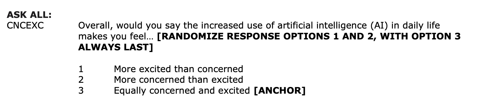

# load packages
library(tidyverse)
library(tidymodels)
library(knitr)
library(patchwork)
library(Stat2Data) #contains sleep data set
# set default theme in ggplot2
ggplot2::theme_set(ggplot2::theme_bw())Probabilities, odds, odds ratios
Announcements
Project Presentations in lab on Friday, March 28
Lab 06 due TODAY at 11:59pm
Statistics experience due April 22
Drop-in Peer Advising will be happening Wednesday, March 26, from 6:30-8:30 PM in Bostock Lounge for students to stop by with any questions they have around STA/CS/MATH classes, major pathways, or other general advice since shopping carts just opened.
Topics
Review: Multicollinearity vs. interaction effects
Logistic regression for binary response variable
Relationship between odds and probabilities
Odds ratios
Computational setup
Review: Multicollinearity vs. interactions
Suppose we fit a model using flipper length and bill length to understand variability in body mass for Palmer Penguins. We make the plots below as part of the EDA.

What are we checking in Plot 1? In Plot 2?
Predicting categorical outcomes
Types of outcome variables
Quantitative outcome variable:
- Sales price of a house in Duke Forest
- Model: Expected sales price given the number of bedrooms, lot size, etc.
. . .
Categorical outcome variable:
- Indicator of being high risk of getting coronary heart disease in the next 10 years
- Model: Probability an adult is high risk of heart disease in the next 10 years given their age, total cholesterol, etc.
Models for categorical outcomes
Logistic regression
2 Outcomes
1: Yes, 0: No
Multinomial logistic regression
3+ Outcomes
1: Democrat, 2: Republican, 3: Independent
Example: Win probabilities
Duke in 2nd round of NCCA March Madness Tournaments
Do teenagers get 7+ hours of sleep?
Students in grades 9 - 12 were surveyed about health risk behaviors including whether they usually get 7 or more hours of sleep.
Sleep7
1: yes
0: no
# A tibble: 446 × 2
Age Sleep7
<int> <int>
1 16 1
2 17 0
3 18 0
4 17 1
5 15 0
6 17 0
7 17 1
8 16 1
9 16 1
10 18 0
# ℹ 436 more rowsPlot the data
ggplot(sleep, aes(x = Age, y = Sleep7)) +
geom_point() +
labs(y = "Getting 7+ hours of sleep")
Let’s fit a linear regression model
Outcome: \(Y\) = 1: yes, 0: no

Let’s use proportions
Outcome: Probability of getting 7+ hours of sleep

What happens if we zoom out?
Outcome: Probability of getting 7+ hours of sleep

üõë This model produces predictions outside of 0 and 1.
Let’s try another model

✅ This model (called a logistic regression model) only produces predictions between 0 and 1.
The code
ggplot(sleep_age, aes(x = Age, y = prop)) +
geom_point() +
geom_hline(yintercept = c(0,1), lty = 2) +
stat_smooth(method ="glm", method.args = list(family = "binomial"),
fullrange = TRUE, se = FALSE) +
labs(y = "P(7+ hours of sleep)") +
xlim(1, 40) +
ylim(-0.5, 1.5)Different types of models
| Method | Outcome | Model |
|---|---|---|
| Linear regression | Quantitative | \[ \mathbf{y} = \mathbf{X}\boldsymbol{\beta} + \mathbf{\epsilon} \] |
| Linear regression (transform Y) | Quantitative | \[ \log(\mathbf{y}) = \mathbf{X}\boldsymbol{\beta} + \mathbf{\epsilon} \] |
| Logistic regression | Binary | \[ \log\Big(\frac{\boldsymbol{\pi}}{1 - \boldsymbol{\pi}}\Big) = \mathbf{X}\boldsymbol{\beta} \] |
Linear vs. logistic regression
State whether a linear regression model or logistic regression model is more appropriate for each scenario.
Use age and political party to predict if a randomly selected person will vote in the next election.
Use budget and run time (in minutes) to predict a movie’s total revenue.
Use age and sex to calculate the probability a randomly selected adult will visit Duke Health in the next year.
Probabilities and odds
Data: Concern about rising AI
This data comes from the 2023 Pew Research Center’s American Trends Panel. The survey aims to capture public opinion about a variety of topics including politics, religion, and technology, among others. We will use data from 11201 respondents in Wave 132 of the survey conducted July 31 - August 6, 2023.
The goal of this analysis is to understand the relationship between age, how much someone has heard about artificial intelligence (AI), and concern about the increased use of AI in daily life.
A more complete analysis on this topic can be found in the Pew Research Center article Growing public concern about the role of artificial intelligence in daily life by Alec Tyson and Emma Kikuchi.
Variables
ai_concern: Whether a respondent said they are “more concerned than excited” about in the increased use of AI in daily life (1: yes, 0: no)

Variables
ai_heard: Response to the question “How much have you heard or read about AI?”- A lot
- A little
- Nothing at all
- Refused
age_cat: Age category- 18-29
- 30-49
- 50-64
- 65+
- Refused
Data prep
# change variable names and recode categories
pew_data <- pew_data |>
mutate(ai_concern = if_else(CNCEXC_W132 == 2, 1, 0),
age_cat = case_when(F_AGECAT == 1 ~ "18-29",
F_AGECAT == 2 ~ "30-49",
F_AGECAT == 3 ~ "50-64",
F_AGECAT == 4 ~ "65+",
TRUE ~ "Refused"),
ai_heard = case_when(AI_HEARD_W132 == 1 ~ "A lot",
AI_HEARD_W132 == 2 ~ "A little",
AI_HEARD_W132 == 3 ~ "Nothing at all",
TRUE ~ "Refused"
))
# Make factors and relevel
pew_data <- pew_data |>
mutate(ai_concern = factor(ai_concern),
age_cat = factor(age_cat),
ai_heard = factor(ai_heard, levels = c("A lot", "A little", "Nothing at all", "Refused"))
)Univariate EDA

Binary response variable
\(Y = 1: \text{ yes (success), } 0: \text{ no (failure)}\)
\(\pi\): probability that \(Y=1\), i.e., \(P(Y = 1)\)
\(\frac{\pi}{1-\pi}\): odds that \(Y = 1\)
\(\log\big(\frac{\pi}{1-\pi}\big)\): log odds
Go from \(p\) to \(\log\big(\frac{\pi}{1-\pi}\big)\) using the logit transformation
Example
Suppose there is a 70% chance it will rain tomorrow
- Probability it will rain is \(\mathbf{\pi = 0.7}\)
- Probability it won’t rain is \(\mathbf{1 - \pi = 0.3}\)
- Odds it will rain are 7 to 3, 7:3, \(\mathbf{\frac{0.7}{0.3} \approx 2.33}\)
Concerned about AI in daily life?
pew_data |>
count(ai_concern) |>
mutate(pi = round(n / sum(n), 3))# A tibble: 2 × 3
ai_concern n pi
<fct> <int> <dbl>
1 0 5245 0.468
2 1 5956 0.532. . .
\(P(\text{Concerned about AI}) = P(Y = 1) = \pi = 0.532\)
. . .
\(P(\text{Not concerned about AI}) = P(Y = 0) = 1 - \pi = 0.468\)
. . .
\(\text{Odds of being concerned about AI} = \frac{0.532}{0.468} = 1.137\)
From odds to probabilities
odds
\[\text{odds} = \frac{\pi}{1-\pi}\]
probability
\[\pi = \frac{\text{odds}}{1 + \text{odds}}\]
Odds ratios
Concern about AI vs. age
| Age | Not Concerned | Concerned |
|---|---|---|
| 18-29 | 550 | 416 |
| 30-49 | 1898 | 1681 |
| 50-64 | 1398 | 1818 |
| 65+ | 1376 | 2013 |
| Refused | 23 | 28 |
Compare the odds for two groups
| Age | Not Concerned | Concerned |
|---|---|---|
| 18-29 | 550 | 416 |
| 30-49 | 1898 | 1681 |
| 50-64 | 1398 | 1818 |
| 65+ | 1376 | 2013 |
| Refused | 23 | 28 |
. . .
We want to compare concern about increased use of AI in daily life between individuals who are 18-29 years old to those who are 65+ years old
Compare the odds for two groups
| Age | Not Concerned | Concerned |
|---|---|---|
| 18-29 | 550 | 416 |
| 30-49 | 1898 | 1681 |
| 50-64 | 1398 | 1818 |
| 65+ | 1376 | 2013 |
| Refused | 23 | 28 |
We’ll use the odds to compare the two groups
\[ \text{odds} = \frac{P(\text{success})}{P(\text{failure})} = \frac{\text{# of successes}}{\text{# of failures}} \]
Compare the odds for two groups
| Age | Not Concerned | Concerned |
|---|---|---|
| 18-29 | 550 | 416 |
| 30-49 | 1898 | 1681 |
| 50-64 | 1398 | 1818 |
| 65+ | 1376 | 2013 |
| Refused | 23 | 28 |
Odds of being concerned with increased use of AI in daily life for 18-29 year olds: \(\frac{416}{550} = 0.756\)
Odds of being concerned with increased use of AI in daily life for those who are 65+ years old: \(\frac{2013}{1376} = 1.463\)
Based on this, we see that individuals 65+ years old are more likely to be concerned about the increased use of AI in daily life than 18-29 year olds.
Odds ratio (OR)
| Age | Not Concerned | Concerned |
|---|---|---|
| 18-29 | 550 | 416 |
| 30-49 | 1898 | 1681 |
| 50-64 | 1398 | 1818 |
| 65+ | 1376 | 2013 |
| Refused | 23 | 28 |
Let’s summarize the relationship between the two groups. To do so, we’ll use the odds ratio (OR).
\[ OR = \frac{\text{odds}_1}{\text{odds}_2} \]
OR: AI concern by age
| Age | Not Concerned | Concerned |
|---|---|---|
| 18-29 | 550 | 416 |
| 30-49 | 1898 | 1681 |
| 50-64 | 1398 | 1818 |
| 65+ | 1376 | 2013 |
| Refused | 23 | 28 |
\[OR = \frac{\text{odds}_{18-29}}{\text{odds}_{65+}} = \frac{0.756}{1.463} = \mathbf{0.517}\]
. . .
The odds an 18-29 year old is concerned about increased use of AI in daily life are 0.517 times the odds a 65+ year old is concerned.
More natural interpretation
It’s more natural to interpret the odds ratio with a statement with the odds ratio greater than 1.
The odds a 65+ year old is concerned about increased use of AI in daily life are 1.934 (1/0.517) times the odds an 18-29 year old is concerned.
Code to make table
pew_data |>
count(age_cat, ai_concern)# A tibble: 10 × 3
age_cat ai_concern n
<fct> <fct> <int>
1 18-29 0 550
2 18-29 1 416
3 30-49 0 1898
4 30-49 1 1681
5 50-64 0 1398
6 50-64 1 1818
7 65+ 0 1376
8 65+ 1 2013
9 Refused 0 23
10 Refused 1 28Code to make table
Code to make table
Code to make table
Application exercise
Recap
Introduced logistic regression for binary response variable
Showed the relationship between odds and probabilities
Introduced odds ratios